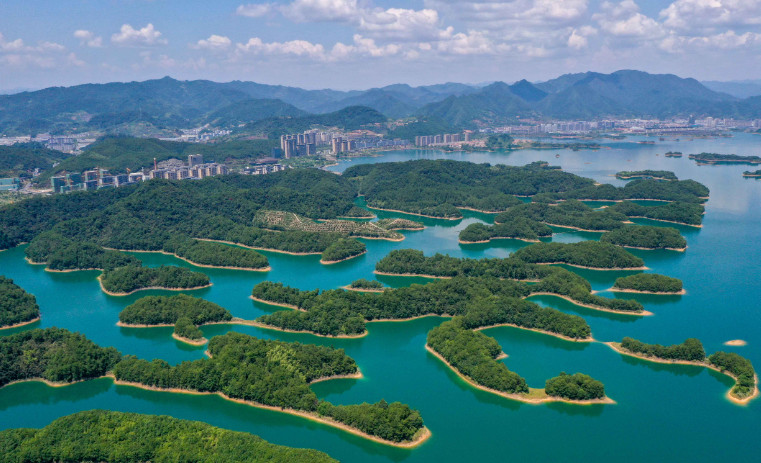

乡村旅游
乡村旅游作为一种新兴的旅游模式，以其独特的魅力和丰富的体验吸引了越来越多的游客。在中国乡村振兴战略的推动下，乡村旅游发展取得了巨大的成功。
首先，乡村旅游的成功得益于丰富的自然资源和独特的乡村风景。中国拥有广袤的农村地区，自然风光各异，山水相间。 从广西的阳朔漓江到云南的丽江古城， 从湖南的张家界到浙江的千岛湖，乡村旅游景区遍布全国各地。 这些地方以其宜人的自然环境和壮丽的景观吸引着游客的目光，成为乡村旅游的热门目的地。
其次，乡村旅游的成功得益于独特的乡村文化和历史遗产。中国乡村地区承载着丰富的历史文化和民俗风情。例如，平遥古城作为保存完整的明清古城之一，展示了古老的建筑风格和传统的商业文化；莫高窟作为世界文化遗产，展示了佛教石窟艺术和古代丝绸之路的历史。 这些独特的乡村文化和历史遗产吸引了众多游客，让他们能够亲身体验乡村的文化底蕴，增加旅游的文化内涵。
此外，乡村旅游的成功还得益于改善的基础设施和服务水平。为了吸引游客，许多乡村地区进行了基础设施建设和旅游服务的提升。道路、交通、餐饮、住宿等方面的改善使得游客能够更加便利地前往乡村旅游目的地，并获得更好的旅游体验。 同时，专业化的旅游服务和丰富多样的旅游项目也进一步提升了乡村旅游的吸引力。
-
阳朔是中国乡村旅游的典型代表之一。它以其美丽的山水风光和独特的乡村文化吸引了大量的游客。阳朔以漓江风光和西街古镇而闻名，游客可以欣赏到壮族民俗表演、乡村美食、自然景观等，体验到原汁原味的乡村生活。
-
以其古城保护和纳西族文化而闻名于世。丽江古城是中国保存最为完整、最具特色的古建筑群之一。游客可以在古城区漫步，欣赏到独特的建筑风格和传统的纳西族文化。此外，丽江周边的束河古镇和玉龙雪山也是吸引游客的热门景点。
-
张家界以其壮丽的山峰和峡谷景观而著名，吸引了大量的国内外游客。游客可以搭乘玻璃栈道，欣赏到壮丽的自然景观，同时也可以体验到当地的土家族文化和特色美食。
-

千岛湖是一个以湖泊和岛屿为特色的乡村旅游目的地。游客可以在湖上游览，欣赏到美丽的湖光山色，还可以参加各种水上活动。千岛湖周边的农家乐也提供了丰富的乡村体验和美食。
成功案例